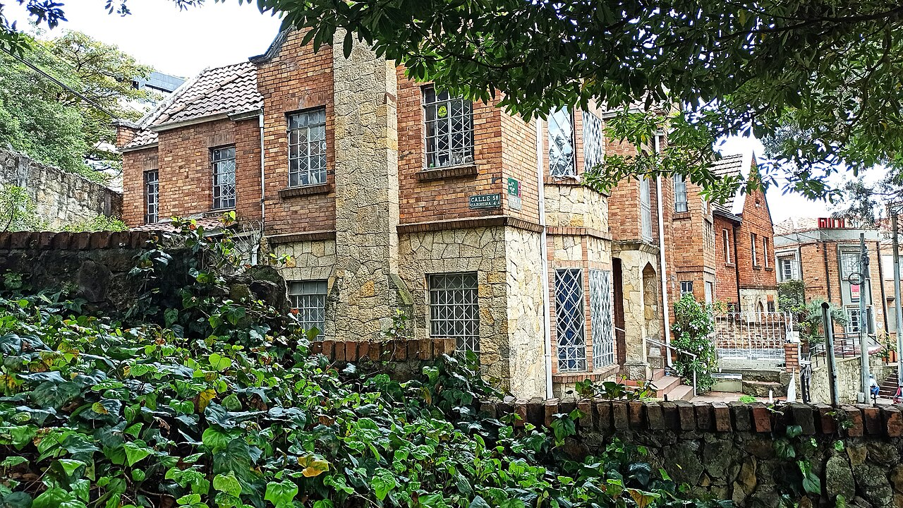
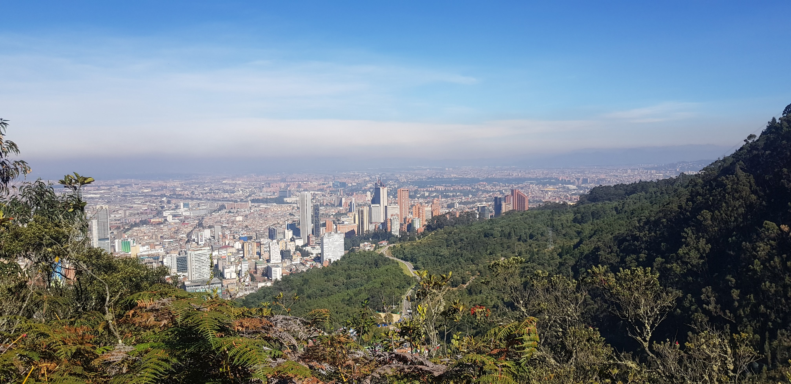

GPMF | Institutional Advisory
Bogotá es una metrópoli vibrante y extensa. Mientras que el Hub Logístico 26 es ideal para negocios rápidos y el Centro Histórico para la inmersión patrimonial, el distrito de Chapinero y Zona Rosa es el corazón bohemio, gastronómico y de vida nocturna de la capital.
Esta guía se enfoca en la Zona G, Zona T y el Parque de la 93. Aquí encontrarás la mejor alta cocina, restaurantes de autor, exclusivas boutiques, centros comerciales y una dinámica vida universitaria y nocturna. Es ideal para viajes donde el networking se extiende a cenas, eventos sociales o simplemente para disfrutar del lado más cosmopolita de la ciudad. (Para el norte corporativo y residencial, revisa Norte y Usaquén).

Evolución de costos para 2026. Tarifas estimadas en principales hubs corporativos:
| Hotel | Ubicación | Costo Est. | Perfil |
|---|---|---|---|
| Four Seasons Casa Medina | Zona G | $300 - $450 USD | Lujo clásico, gastronómico |
| Click Clack Hotel | Parque 93 / Zona T | $150 - $250 USD | Moderno, vibrante, networking |
| JW Marriott | Zona Financiera | $250 - $350 USD | Corporativo premium |
Visualice la cercanía entre los principales distritos gastronómicos, la zona financiera y los hoteles corporativos:

Restaurantes recomendados para experiencias de alto nivel y networking en Chapinero:
Chapinero concentra el entretenimiento y las zonas de compras exclusivas a distancias caminables:
Acceda a recursos exclusivos y conozca cómo GPMF puede acompañar su estrategia en el mercado LATAM.
Iniciar Diagnostico Estrategico